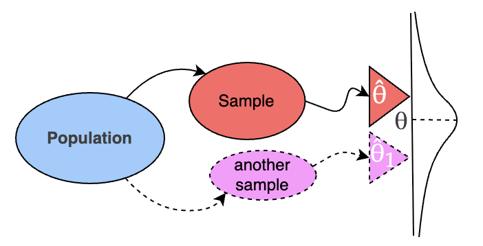
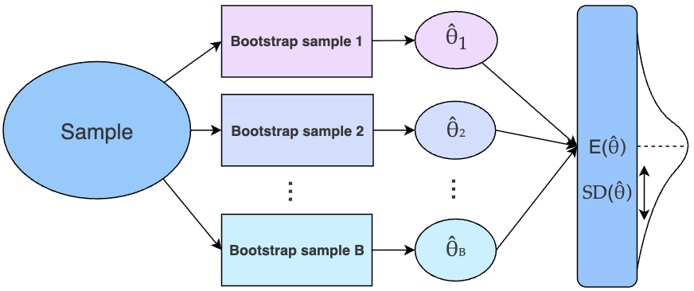
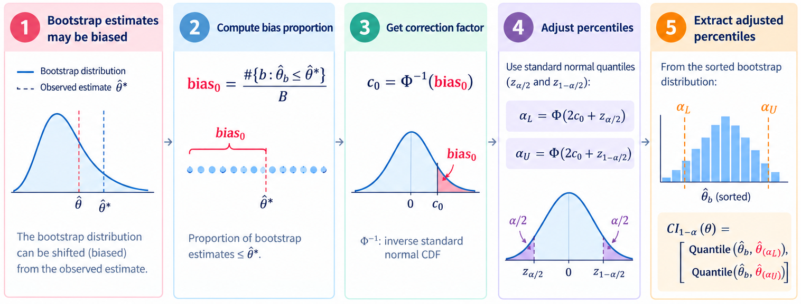
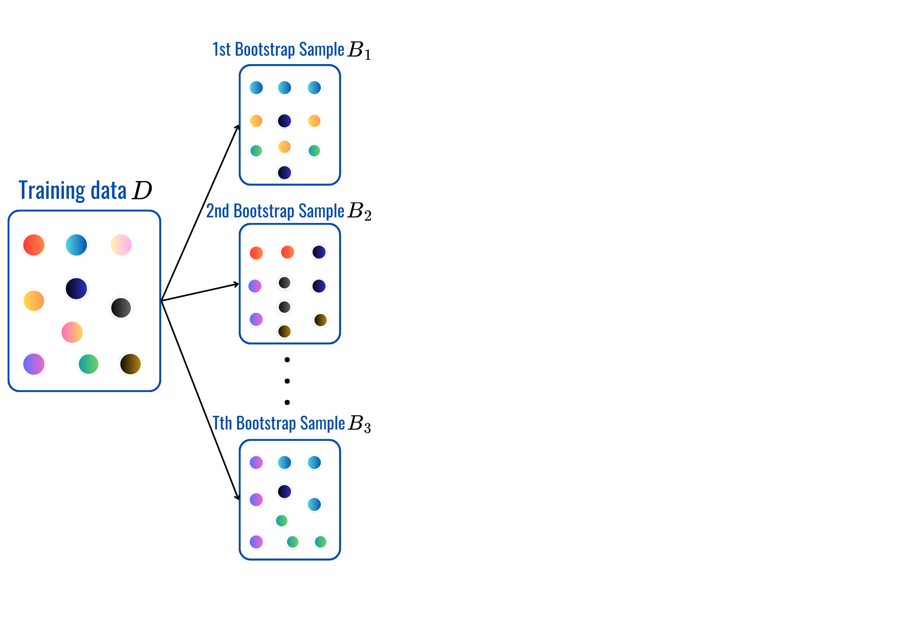
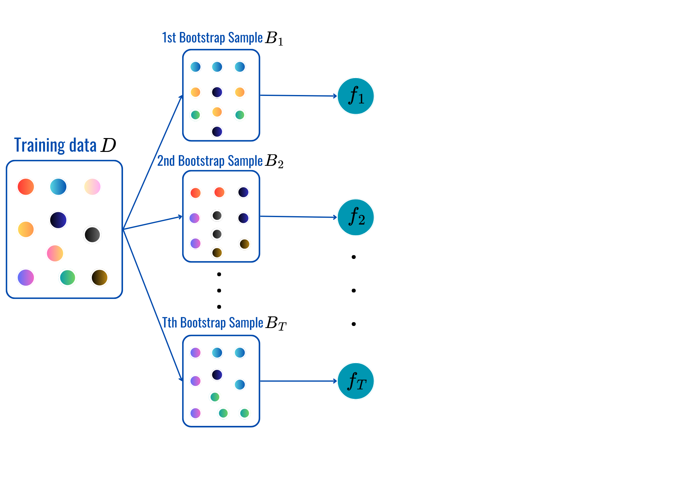
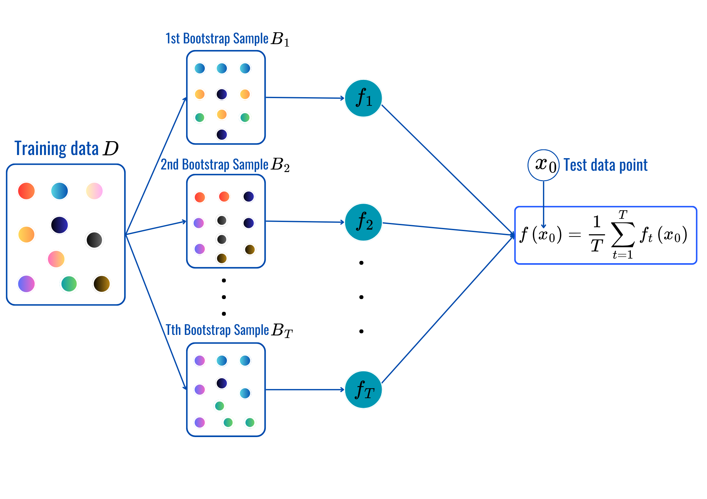

Bootstrap & Resamping Methods
INS-605: Data Analysis II

Lecturer: Dr. Sothea HAS
helpful resources
Learning Outcomes
By the end of this lecture, you should be able to:
- Explain the process of Bootstrapping.
- What can we use it for in Data Analysis & Data Science?
- Apply Bootstrap to estimate confidence intervals.
- Apply Bootstrap to Bagging.
- Understand how correlated samples limit the power of Bootstrap.

1 Introduction to Bootstrapping
1.1 What is Bootstrapping?
- We have only one dataset: \[D = \{x_1,x_2,\ldots,x_n\}\]
- But we want to know:
- How variable is our estimator?
- What would happen with another sample?
- How confident are we in our estimate?
- Bootstrapping allows us to estimate the sampling distribution of an estimator.
- It is a key tool for many ML models: Bagging, RF, etc.
1.2 Bootstrap Procedure
- Treat the observed data as an approximation of the population and repeatedly resample with replacement.

- Each bootstrap sample \(D_j^*\to\) an estimator \(\widehat{\theta}_j\).
- The uncertainty of \(\widehat{\theta}\) is quantified by \(\text{SE}(\widehat{\theta})\).
2 Bootstrapping confidence intervals
2.1 Basic Method
Bootstrap Method
- Intialization: \(B\) (number of bootstrap samples) and the data \(D\)
for\({\color{red}{b}}=1,\dots,B\):- Draw a bootstrap sample \(D^*_b\) from the data \(D\) then compute \(\color{red}{\widehat{\theta}_b}\) from \(D^*_b\).
- Store \(\color{red}{\widehat{\theta}_b}\) to the list \(\color{red}{\widehat{\Theta}}\).
- Return \(\color{red}{\widehat{\Theta}}=[\color{red}{\widehat{\theta}_1}, \dots, \color{red}{\widehat{\theta}_B}]\) and the average \({\color{blue}{\widehat{\theta}^*}}=\frac{1}{B}\sum_{{\color{red}{b}}=1}^B\color{red}{\widehat{\theta}_{\color{red}{b}}}.\)
- Let bias \({\color{red}{e_b}}={\color{red}{\widehat{\theta}_b}}-\color{blue}{\widehat{\theta}^*}\): the gap between estimator and the average.
- Sort \({\color{red}{e_b}}\)’s values, then let \(\color{red}{e_{q}}\) be its quantile of \({\color{red}{q}}\)-percentile.
- Confidence interval: \(\text{CI1}_{\color{red}{1-\alpha}}({\color{blue}{\theta}})=\left[\color{blue}{\widehat{\theta}^*}-\color{red}{e_{\alpha/2}},\color{blue}{\widehat{\theta}^*}+\color{red}{e_{1-\alpha/2}}\right].\)
See Puth et al., (2015) for more details and examples.
2.2 Percentile Method
Bootstrap Method
- Intialization: \(B\) (number of bootstrap samples, shall be large \(\approx 1000\)) and the data \(D\)
for\({\color{red}{b}}=1,\dots,B\):- Draw a bootstrap sample \(D^*_b\) from the data \(D\) then compute \(\color{red}{\widehat{\theta}_b}\) from \(D^*_b\).
- Store \(\color{red}{\widehat{\theta}_b}\) to the list \(\color{red}{\widehat{\Theta}}\).
- Return \(\color{red}{\widehat{\Theta}}=[\color{red}{\widehat{\theta}_1}, \dots, \color{red}{\widehat{\theta}_B}]\) and the average \({\color{blue}{\widehat{\theta}^*}}=\frac{1}{B}\sum_{{\color{red}{b}}=1}^B\color{red}{\widehat{\theta}_{\color{red}{b}}}.\)
- Sort the estimators: \(\color{red}{\widehat{\Theta}}=[\color{red}{\widehat{\theta}_{(1)}}, \dots, {\color{red}{\widehat{\theta}_{(B)}}}]\).
- Confidence interval: \(\text{CI2}_{\color{red}{1-\alpha}}({\color{blue}{\theta}})=\left[\color{red}{\widehat{\theta}_{(\alpha/2)}},\color{red}{\widehat{\theta}_{(1-\alpha/2)}}\right].\)
2.3 Normal Approximation Method
Bootstrap Method
- Intialization: \(B\) (number of bootstrap samples) and the data \(D\)
for\({\color{red}{b}}=1,\dots,B\):- Draw a bootstrap sample \(D^*_b\) from the data \(D\) then compute \(\color{red}{\widehat{\theta}_b}\) from \(D^*_b\).
- Store \(\color{red}{\widehat{\theta}_b}\) to the list \(\color{red}{\widehat{\Theta}}\).
- Return \(\color{red}{\widehat{\Theta}}=[\color{red}{\widehat{\theta}_1}, \dots, \color{red}{\widehat{\theta}_B}]\) and the average & std: \(\begin{cases}{\color{blue}{\widehat{\theta}^*}}&=\frac{1}{B}\sum_{{\color{red}{b}}=1}^B\color{red}{\widehat{\theta}_{\color{red}{b}}}\\ {\color{purple}{\text{SD}}}&=\sqrt{\frac{1}{B-1}\sum_{{\color{red}{b}}=1}^B({\color{red}{\widehat{\theta}}_{\color{red}{b}}}-{\color{blue}{\widehat{\theta}^*}})^2}\end{cases}\).
- Let \({\color{red}{q}_{\alpha}}=\phi^{-1}(\alpha)\) for \(\alpha\in(0,1)\) and \(\phi^{-1}\) is the inverse CDF of the standard normal distribution.
- Confidence interval: \(\text{CI3}_{\color{red}{1-\alpha}}({\color{blue}{\theta}})=\left[\color{blue}{\widehat{\theta}^*}-{\color{purple}{\text{SD}}}{\color{red}{q_{\alpha/2}}},\color{blue}{\widehat{\theta}^*}+{\color{purple}{\text{SD}}}{\color{red}{q_{1-\alpha/2}}}\right].\)
2.4 Bias-corrected bootstrap
- In practice, bootstrap estimates can be biased.
- Bias-corrected bootstrap confidence interval aims to correct this.

3 Bagging Method
3.1 From Bootstrap to Bagging
- Bootstrap is also used as the basis in Machine Learning.
- Train ML model \(f_b\) on a bootstrap dataset \(B_b\): \[f_1(x),f_2(x),\ldots,f_B(x)\]
- Then average their predictions: \[\boxed{\hat f_{\text{bag}}(x)=\frac{1}{B}\sum_{b=1}^{B}f_b(x)}\]
- This is called: Bootstrap Aggregating — Bagging.
Bagging in Practice



What does it aim to do?
- Individual models trained on bootstrap samples can have high variance and very biased.
- Averaging several models can make the final prediction more stable (reducing variance).
4. Why Does Averaging Reduce Variance?
- Suppose every model has prediction variance: \(\mathbb{V}(f_b)=\sigma^2\)
- If models were independent: \(\mathbb{V}\left(\frac{1}{B}\sum_{b=1}^{B}f_b\right)=\frac{\sigma^2}{B}\).
- Therefore: \(\boxed{B\uparrow\quad\Rightarrow\quad \text{Variance}\downarrow}\)
But bootstrap models are correlated!
- In Bagging, models are not actually independent!
- If pairwise correlation is \({\color{blue}{\rho}}\): \(\boxed{\mathbb{V}(\bar f)=\sigma^2\left[{\color{blue}{\rho}}+\frac{1-{\color{blue}{\rho}}}{B}\right]}\).
- As \(B\) gets large: \(\mathbb{V}(\bar f)\rightarrow{\color{blue}{\rho}}\sigma^2\).
- Important ML insight:
More models reduce variance, but correlation creates a variance floor (related bootstrap samples \(B_b\to\) related models \(f_b\)).
Summary
- Bootstrap helps estimating uncertainty of estimators computed from different samples:
- Standard errors
- Several types of confidence intervals
- Sampling distributions
- Uncertainty of statistics
- It’s also applied to variance reduction in ML models…
🥳 Yeahhhh 🥂!!!
Let’s take a break!